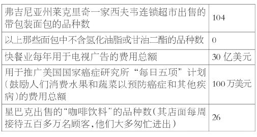
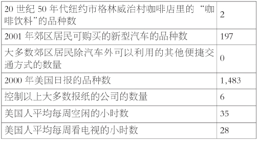
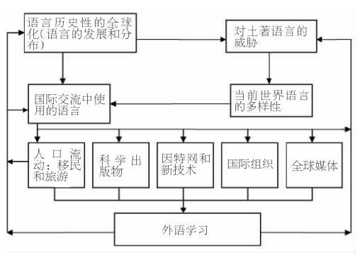
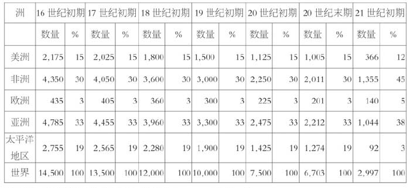
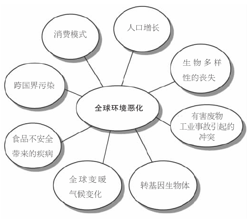
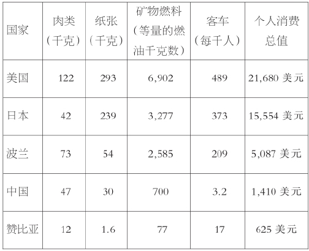
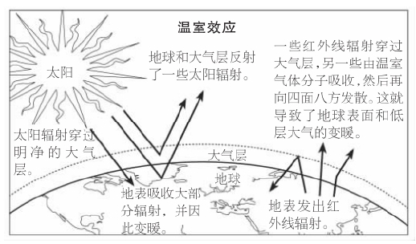
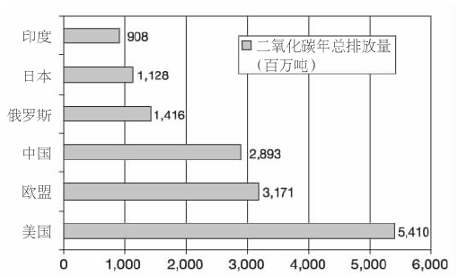
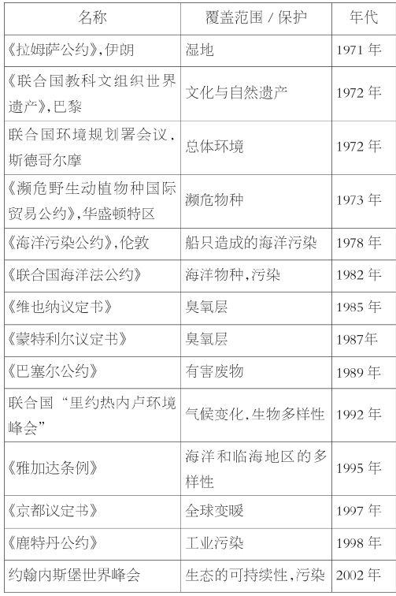

即使写一本十分简略的介绍全球化的入门书，如果不去审视它的文化向度，也会给人留下遗憾和不足。文化全球化是指全球范围内文化活动的加强与扩展。显然，“文化”是一个相当宽泛的概念；人们经常用它来描述所有的人类经验。为了避免下文出现概括过度的问题，就必须对社会生活的各个方面进行分析和区别。例如，我们把形容词“经济的”与商品的生产、交换和消费联系了起来；如果讨论“政治的”方面，我们是指与社会中权力的产生和分配有关的实践活动；如果讨论“文化的”方面，我们关注的是意义的象征性构建、表达和传播。鉴于语言、音乐和图像构成了象征性表达的主要形式，它们在文化领域中具有特殊的意义。
过去几十年里，文化互联和依存的网络蓬勃发展，这使得一些评论者认为，文化实践是当代全球化的核心。然而，文化全球化并非始于摇滚乐、可口可乐或足球在全世界的传播。正如第二章所指出的，文明间的广泛交流比现代性要古老得多。尽管如此，当代文化传播在数量和程度上都大大超过了以前的各个时期。在因特网和其他新技术的带动下，相比起以往，我们这个时代主要的意义象征系统，如个人主义、消费主义以及各种宗教话语，得到了更加自由和广泛的传播。因为思想和图像能够轻易而快速地从一地传播到另一地，所以它们深刻地影响了人们对日常生活的体验方式。现在，文化实践经常避开如城镇和国家这样的固定地点，最终在与全球主要主题的互动中获得新的意义。
由于研究文化全球化的学者涉猎的主题图景广阔，提出的问题太多，我们无法在这本简略的入门书里进行充分论述。本章并不想提供一长串相关话题的清单，而只是想重点讨论四个重要主题：新兴的全球文化中同一性与差异性之间的张力，跨国媒体公司在传播大众文化方面的重要作用，语言的全球化，以及物质主义和消费主义的价值观对我们这个星球的生态系统的影响。
全球化让全世界的人们变得更加相似还是更加不同？这是在讨论文化全球化这一主题时经常提到的问题。一群所谓的“鼓吹全球化的悲观的评论家”赞同前者，他们认为，我们并非正在走向一个反映世界现存文化多元性的文化幻想。相反，我们看到的是一个不断被同质化的大众文化的兴起，支撑它的是以纽约、好莱坞、伦敦和米兰为中心的西方的“文化产业”。这些评论家指出，他们这一解释的证据是，亚马孙河区的印第安人穿着耐克训练鞋，南撒哈拉沙漠的居民购买美国德士古棒球帽，巴勒斯坦青年在拉姆安拉商业区炫耀他们的芝加哥公牛队的运动衫。这种文化同质说的阐述者把英美价值观和消费品的传播看做“世界的美国化”，他们认为，西方的规范和生活方式正在颠覆那些更为弱小的文化。虽然有些国家在努力抵制这些“文化帝国主义”的力量——例如，在伊朗，人们被禁止使用圆盘式卫星天线，法国对进口电影和电视节目强制实行配额和关税制度——但在美国，大众文化的传播似乎势不可当。
在北半球主要国家内部，这些同一性的表现也很明显。美国社会学家乔治·里茨发明了“麦当劳化”这个术语来描述这一广泛的社会文化进程，由此，快餐店原则开始逐渐控制美国社会和世界其他地方越来越多的行业部门。从表面上看，这些原则似乎是合乎理性的，它们努力以高效而平常的方式来满足人们的需求。然而，在声称“喜欢见到你微笑”的这类不断重复的电视商业广告背后，我们能看出一些严重的问题。其一，一般来说快餐食品营养价值低，其中脂肪含量尤其高——这成为了出现严重健康问题（如心脏病、糖尿病、癌症和儿童肥胖症）的内在根源；而且，“理性的”快餐服务企业的运作例行公事，缺乏人情味，这实际上破坏了多元文化的表现形式。从长远来看，世界的麦当劳化意味着把统一的标准强加于人，这削弱了人类的创造力，而且使社会关系变得非人性化了。
美国式的生活方式


资料来源：埃里克·索斯勒，《快餐国家》（霍顿与米夫林出版社，2001年），第47页；www.naa.org/info/facts00/11.htm；《2001年消费者报告购买指南》（消费者协会，2001年），第147——163页；劳里·加勒特，《信任的背叛》（海波龙，2000年），第353页；www.roper.com/news/content/news169.htm；《2001年世界年鉴》（世界年鉴图书公司，2001年），第315页；www.starbucks.com。
在这群悲观的鼓吹全球化者当中，最有思想的分析者或许要数美国的政治理论家本杰明·巴伯了。在讨论这一主题的一本畅销书里，他告诫读者要防范他称之为“麦克世界”的文化帝国主义——那是一个没有灵魂的消费资本主义，它正在迅速地把世界多样化的人口变成一个冷漠和统一的大市场。对巴伯来说，在奉行扩张主义的商业利益的驱使下，麦克世界是20世纪五六十年代拼凑起来的美国肤浅流行文化的产物。音乐、影像、戏剧、书籍和主题乐园服务于美国的形象并向外输出了这一形象，它们围绕共同理念、广告口号、明星、歌曲、品牌、打油诗以及商标创造了共同的趣味。
乐天派的鼓吹全球化者也赞同他们悲观的同仁，认为文化全球化产生了更多的同一性，但他们认为这是一件好事情。例如，美国社会理论学家弗朗西斯·福山明确地表示，他欢迎英美价值观和生活方式在全球的传播，并认为世界的美国化就是民主和自由市场的扩展。但是，乐天派的鼓吹全球化者并不是以美国沙文主义者的样子出现，在世界范围内应用命定扩张说 [5] 这一陈旧的主题。这个阵营的一些代表人物把自己看做坚定的世界主义者，把因特网赞美为同质化的“技术文化”的先驱。另一些人则热衷于自由市场，拥护全球消费资本主义的价值观念。
承认世界上存在强大的同质化倾向是一回事，而断定我们这个星球上现存的文化多元性注定会消失则是另一回事了。实际上，一些有影响的评论者提出了一个相反的推测，它把全球化与新形式的文化表现联系了起来。例如，社会学家罗兰·罗伯逊主张，全球文化的流动经常会给地方文化注入活力。因此，地方差异和特色并非完全被西方同质性的消费主义力量所淹没，它们在创造璀璨的独特文化方面仍发挥着重要作用。罗伯逊认为，文化全球化总是发生在地方语境里；他摒弃了文化同质化这一论点，相反，他提出了“全球地方化”——具有文化借鉴特点的全球与地方的复杂互动。文化“杂交性”的最终表现不能简化为泾渭分明的“同一性”或“差异性”。如我们在前面讨论奥萨玛·本·拉登时所指出的那样，这种杂交化过程在时尚、音乐、舞蹈、电影、食品和语言方面表现得最为显著。
在我看来，鼓吹全球化者和怀疑论者各自的观点未必水火不容。当代跨越文化界限的生存和行为经验既意味着传统意义的丧失，也意味着新的象征表现方式的产生。重新建构的归属感与一种流动不居的感觉不安地共存。文化全球化使人们的意识发生了显著的转变。实际上，现代性的旧结构似乎正逐渐被一个新的后现代框架所取代，其特点是对身份和知识的感觉不再那么稳定。
鉴于全球文化流动的复杂性，人们实际上可以预料到不均衡和自相矛盾的结果。在某些情境里，这些流动或许会改变传统的民族身份的表现形式，使它朝着具有同一性特点的大众文化方向发展；在其他情境里，它们或许会促生新的文化排他主义的表现方式；在另外一些情境里，它们还会鼓励文化杂交。那些笼统地指责美国化所带来的同质化效果的评论者必须记住，在当今世界，几乎没有一个社会拥有“本真的”、自足的文化。那些对繁荣的文化杂交性感到极度失望的人应该听听激动人心的印度摇滚乐，欣赏一下夏威夷复杂的洋泾滨英语，或者享受一下古巴式中国菜的烹饪乐趣。最后，那些欢迎消费资本主义传播的人需要注意它带来的负面效应，如社区情感的大幅削弱及自然和社会的商品化。
在很大程度上，全球媒体帝国生产和指挥着我们这个时代的全球文化流动，它们依靠强大的通讯技术传播信息。这些公司以程式化的电视节目和毫无思想性可言的广告渗透进了全球文化，不断地塑造着全世界人们的身份和欲望。在过去20年里，一小部分巨型跨国公司已慢慢控制了全球娱乐、新闻、电视和电影市场。2000年，仅10家媒体企业集团——美国电话电报公司、索尼公司、美国在线——时代华纳公司、贝塔斯曼集团、自由媒体集团、维旺迪环球公司、维亚康姆公司、通用电气公司、迪士尼公司和新闻集团——就占世界通讯业年均收入（2500亿美元到2750亿美元）的三分之二还要多。2000年上半年，全球媒体、因特网、电信业联合组织的交易额达到3000亿美元，这一数字是1999年前六个月的三倍。
即使在15年前，也不存在一家控制着本杰明·巴伯所谓的“信息娱乐电信业”的当代巨型媒体公司。到2001年，几乎所有这些公司都名列世界非金融业企业的300强。当今，大多数媒体分析者都承认，与20世纪早期的石油和汽车业相类似，一个全球性商业媒体市场的出现就意味着商品供应寡头独占式的垄断。几十年前举足轻重的文化创新者——独立的小型唱片公司、无线电台、电影院、报纸和图书出版公司——事实上已经销声匿迹，因为它们发现自己根本没有能力和媒体巨头竞争。
这种金融与文化的勉强结合带来了显著的负面效应。电视节目变成了全球性的“流言蜚语市场”，为各个年龄层次的读者和观众提供美国名人（如布兰妮·斯皮尔斯、詹妮弗·洛佩兹、莱昂纳多·迪卡普里奥和科比·布莱恩特）空洞无聊的私生活细节。有证据表明，全世界的人们，特别是北半球那些富国的人们，看电视的时间超过以前任何时候。例如，在美国，每个拥有电视的家庭看电视的日平均时间从1970年的5小时56分钟增长到了1999年的7小时26分钟。同年，美国的电视进户率为98.3%，其中73.9%的用户拥有两台或更多台电视机。2000年，美国电视广告的喧嚣达到史无前例的程度，黄金时段每小时的商业广告最长的超过了十五分钟，这还不包括时不时就露脸的当地广告。美国的电视广告业务量从1970年的36亿美元增长到了1999年的504.4亿美元。最近有研究表明，美国12岁的儿童每年平均要看两万部电视商业广告片，而那些蹒跚学步的两岁孩子也已经开始信任商标品牌了。
2001年“十大”媒体企业集团
美国电话电报公司（对以下这些公司拥有部分或大部分的所有权）
电视： 7个网络（包括华纳兄弟公司、家庭票房电视台和娱乐电视网），1个制片公司，最大的有线电视供应商
电影： 3个制片公司（包括华纳兄弟公司）
无线电台： 加拿大的43个无线电台
音乐： 一个制作公司（昆西·琼斯娱乐公司）
索尼公司（对以下这些公司拥有部分或大部分的所有权）
电视： 4个网络（包括德莱门多电视网、精选音乐网和游戏展示网）
电影： 4个制片公司（包括哥伦比亚影视公司），1个连锁影院（洛伊影院）
音乐： 4个唱片公司（包括哥伦比亚唱片公司、史诗唱片公司和美国唱片公司），1个录音室（惠特菲尔德录音室）
美国在线——时代华纳公司（对以下这些公司拥有部分或大部分的所有权）
电视： 15个网络（包括华纳兄弟公司、家庭票房电视台、特纳广播公司、特纳网络电视和有线新闻网），第二大的有线电视供应商，4个制片公司（包括华纳兄弟公司和城堡石公司），收藏有6500部电影，32000个电视节目，1个数字化录像公司（美国数字录像公司）
杂志： 64种杂志（包括《人物》、《生活》和《时代》）
电影： 3个制片公司（包括华纳兄弟公司和新线公司）
音乐： 40个唱片公司（包括大西洋唱片公司、伊莱莎唱片公司和犀牛唱片公司），1个制作公司（昆西·琼斯娱乐公司）
因特网： 4个因特网公司（包括美国在线、电脑服务公司和网景公司），7家网站（包括音乐网、Winamp网、电影讯息与售票网）
贝塔斯曼集团（对以下这些公司拥有部分或大部分的所有权）
电视： 欧洲的22个电视台，欧洲最大的广播商
因特网： 6家网站（包括来科思网、音乐网、得乐网、巴恩斯和诺布尔网）
杂志： 80种杂志（包括《YM》、《家庭圈》和《健康》）
无线电台： 欧洲的18个无线电台
音乐： 200个唱片公司（包括阿里斯塔唱片公司、美国广播唱片公司和贝塔斯曼音乐集团经典唱片公司）
报纸： 德国和东欧的11家日报
自由媒体集团（对以下这些公司拥有部分或大部分的所有权）
电视： 20个网络（包括探索频道、美国网络、科幻有线频道、QVC电视购物网），14个电视台，日本最大的有线电视运营商，两个制片公司（麦克尼尔和莱尔制片公司），1个数字化录像公司（美国数字录像公司）
因特网： 3家网站（包括票王网和城市搜索网）
电影： 6个制片公司（包括美国电影公司、格瑞梅西影视公司和十月电影公司）
无线电台： 位于美国的21个无线电台，位于加拿大的49个无线电台
杂志： 101种杂志（包括《美国婴儿》、《现代新娘》和《十七岁》）
维旺迪环球公司（对以下这些公司拥有部分或大部分的所有权）
电视： 在15个国家拥有34个频道（包括美国有线电视网和太阳舞频道），在11个国家拥有有线电视业务，两个制片公司（环球制片公司）
电影： 6个制片公司（包括环球制片公司、宝丽金影业公司和格瑞梅西影视公司）
音乐： 10个唱片公司（包括域际唱片公司、高清果酱唱片公司和MCA唱片公司）
因特网： 1个因特网公司（维萨维公司），两家网站（得乐网和万网）
杂志： 两种杂志（《快报》和《拓展》）
报纸： 法国的免费报纸
维亚康姆公司（对以下这些公司拥有部分或大部分的所有权）
电视： 18个网络（包括哥伦比亚广播公司、联合派拉蒙电视网、音乐电视网和尼克隆顿电视公司），39个电视台，7个制片公司，1个数字化录像公司（美国数字录像公司）
电影： 4个制片公司，1个电影出租连锁公司（百视达公司）
因特网： 8家网站（包括运动在线网、好莱坞网和万网）
杂志： 4种杂志（包括《BET周末》、《显现》和《全心全意》）
无线电台： 184个无线电台，哥伦比亚广播公司无线电网络
通用电气公司（对以下这些公司拥有部分或大部分的所有权）
电视： 12个网络（包括美国全国广播公司、艺术与娱乐频道和布莱伏有线电视网），13个电视台和帕克斯电视网，5个制片公司，1个数字化录像公司（美国数字录像公司）
因特网： 6家网站（包括沙龙网、汽车销售网和波罗网）
沃尔特·迪士尼公司（对以下这些公司拥有部分或大部分的所有权）
电视： 17个网络（包括美国广播公司、娱乐和体育节目网络、人生频道），10个电视台，6个制片公司（包括博伟影视公司、试金石影业公司和萨班影业公司）
电影： 6个制片公司（包括帝门影业公司、米拉麦克斯影业公司和试金石影业公司）
无线电台： 50个无线电台以及4个网络
杂志： 6种杂志（包括《美国周报》、《发现》和《谈话》）
新闻集团（对以下这些公司拥有部分或大部分的所有权）
电视： 14个网络（包括福克斯电视网络、国家地理频道和高尔夫频道），33个电视台，5个制片公司（包括摄政电视公司和XYZ娱乐公司），1个数字化录像公司（美国数字录像公司）
电影： 7个制片公司（包括福克斯探照灯公司、摄政时代电影制作公司和二十世纪福克斯公司）
音乐： 1个唱片公司（劳库斯唱片公司）
报纸： 7家日报（包括《纽约邮报》、《太阳报》和《澳洲人报》）
改编自《国家》第7期，2002年1月14日
跨国媒体企业所传播的价值观念不仅保证了流行文化无可争议的文化霸权地位，而且还导致了社会现实的非政治化和公民责任感的日益削弱。过去20年，最引人注目的变化就是新闻广播和教育节目转变为了浅薄的娱乐节目。由于新闻节目的利润还不及娱乐节目的一半，所以媒体公司不顾新闻业所鼓吹的新闻编辑业务与商业决策分离的说法，不断地屈服于高额利润的诱惑。新闻业与娱乐公司的合作及联合正迅速成为一种规范，于是出版管理人员会迫使记者参与报纸的商业活动，这种情况并不罕见。因此，持续打击新闻业的自主权也是文化全球化的一部分。
估量由全球化带来的文化变化的一种直接方法是研究全球语言使用模式的转变。语言全球化可以看做这样一个进程：在国际交流中，人们越来越多地使用一些语言，而另外一些语言却失去了主导地位，甚至因为缺乏使用者而消失。夏威夷大学全球化研究中心的研究者已经找出了影响语言全球化的五大变量：
1.语言数量 ：世界各地语言数量的减少表明，同质性的文化力量在不断加强。
2.人口流动 ：语言会随同人们一起流动和迁移。移民模式影响了语言的传播。
3.外语学习和旅游 ：外语学习和旅游促进了语言跨越国家和文化界限的传播。
4.网络语言 ：因特网已成为了即时交流和快速获得信息的全球性媒介。网络语言的使用是分析国际交流中语言的主导性和种类的关键因素。
5.国际科学出版物 ：国际科学出版物中包含着全球思想话语的语言，因此对关乎全世界知识生产、再生产和流通的思想界会产生至关重要的影响。
下页上的图表说明了这五个变量之间的关系。
由于这些因素之间的相互作用具有高度的复杂性，这一领域的研究经常会得出相互矛盾的结论。以下的图表只能代表对语言全球化意义和影响的一种可能的概念化理解。这一领域的专家无法达成一致意见，于是他们提出了几种不同的假设。一种模式提出的假设认为，有几种语言（如英语、汉语、西班牙语和法语）越来越具有全球影响力，这显然与世界其他语言数量的不断减少有关。另一种模式认为，语言的全球化并不一定意味着我们的子孙后代注定只能使用几种语言。此外，还有一种观点强调，英美文化工业的力量会使得英语成为21世纪唯一 全球通用的语言。

语言的全球化。
资料来源：改编自夏威夷大学马诺阿分校全球化研究中心发布的资料，www.globalhawaii.org。
当然，英语日益彰显的重要性可谓历史悠久，可以追溯到16世纪末英国殖民主义产生的时候。那时，以英语为母语的人大约只有七百万。到20世纪90年代，这一人数已经猛增至超过三亿五千万，另外还有四亿多人将英语作为第二语言。现在，因特网上80%的内容都是英语的。全世界人数不断增长的外国留学生中，几乎有一半人在英美国家的大学注册就读。
全世界日益减少的语言数量，1500—2000年

资料来源：夏威夷大学马诺阿分校全球化研究中心，www.globalhawaii.org。
然而，与此同时，世界无书面形式的口头语言的数量也从1500年的一万四千五百种左右减少到了2000年的不足七千种。一些语言学家预测，按照目前这种速度减少下去，到21世纪末，50%——90%的现存语言将会消失。
但语言并不是世界上唯一面临灭绝危险的事物。消费主义价值观和物质主义生活方式的蔓延也已危及到了我们这个星球的生态健康。
人们如何看待他们的自然环境在很大程度上取决于其文化背景。例如，沉浸于道教、佛教和各种万物有灵论中的文化，倾向于强调所有生物之间的相互依存性——要求在生态需要和人类需求之间保持一种微妙的平衡。另一方面，犹太教和基督教的人文主义则包含了深刻的二元价值观，它认为人类是宇宙的中心。自然被看成是一种“资源”，可以将它作为一种工具来使用，以此来满足人类的欲望。这种人类中心范式最极端的表现就是消费主义的主要价值观念。如上文所指出的，美国主导的文化产业试图让全球的观众相信，人生的主要价值和意义在于无穷无尽地积累物质财富。
然而，21世纪伊始，我们已经不可能忽视这样一个事实：人们呼吸的空气、赖以生存的气候、吃的食物、喝的水都已经把这个星球上的人紧密地联系在一起了。虽然人类明白相互依存这一显而易见的道理，但因为他们想获得奢华的生活方式，所以我们这个星球的生态系统在不断地遭受人类的破坏。即使我们承认，当今世界所面临的一些主要生态问题也曾是困扰古代文明的问题，但直到工业革命发生前，环境恶化相对来说还是地方性的，而且经历了成千上万年的时间。过去几十年里，地球环境恶化的规模、速度和深度都达到了史无前例的程度。试看环境恶化的全球化的一些最危险的表现形式。

全球环境恶化的主要表现和后果。
资料来源：本书作者。
人们关心的两大问题与北半球失控的人口增长和奢华的消费模式有关。自大约四百八十代人之前农业经济第一次出现以来，世界人口爆炸性地增长到了之前的1000倍，达到六十多亿。这一增长量的二分之一发生在过去30年间。大概除了啮齿类动物之外，人类已经成为了地球上数量最多的哺乳动物。对食物、木材和纤维需求的极度增长，已经给地球的生态系统带来了巨大的压力。今天，地球表面的大片土地，特别是那些干旱和半干旱地区，从生物学上来说几乎已经不再具有生产能力了。
人们经常狭隘地把对人口增长与环境恶化问题的关注局限在人口总量的水平上。然而，人类对环境的全球性影响也是人均消费的结果，就如同总体人口规模所产生的结果一样。例如，美国人口只占世界人口的6%，却消费着全球30%——40%的自然资源。地区性的过度消费加上失控的人口增长给我们这个星球的健康带来了严重的问题。除非我们愿意改变支撑着这些可怕动因的潜在的文化和宗教价值结构，否则地球母亲的健康将有可能会进一步恶化。
2001年某些国家的个人消费模式

资料来源：美国公共广播服务公司，http://www.pbs.org/earthonedge/ science/trends.html。
由人类引起的如全球变暖这种气候变化，是当代环境问题在强度和范围上发生决定性转变的另一实例。我们这个星球大气层中排放的气体（包括二氧化碳、甲烷、氮氧化物和硫氧化物以及氟利昂）迅速积累，这已经大大增强了地球阻止热量排放的能力，由此而来的“温室效应”就是造成全球平均气温上升的原因。
虽然全球变暖的确切效应难以计算，美国科学家关注联盟提供的数据表明，全球的平均气温从1880年的13.5°C（56.3°F）上升到了2000年的14.4°C（57.9°F）。全球气温的进一步升高可能会导致极地地区部分冰帽融化，到2100年会引起全世界的海平面升高90厘米——这一灾难性的后果会威胁到世界上许多沿海地区。

图9 温室效应。
跨越国界的污染是我们集体生存的另一重大威胁。大量人工合成的化学品被排入到空气和水中，使得人类和动物的生存条件已超过了以前生物学经验的极限。例如，20世纪下半期人们使用了氟利昂作为不可燃的冷却剂、工业溶剂、发泡剂和气溶胶喷射剂。20世纪70年代中期，研究者指出，无节制地向空气中排放氟利昂似乎损耗了地球的臭氧保护层。10年后，人们在塔斯马尼亚、新西兰和大面积南极地带的上空发现了很大的“臭氧层空洞”，这最终导致了一项国际联合行动，即逐渐停止生产氟利昂和其他一些破坏臭氧层的物质。其他一些跨越国界的污染包括工业排放的硫氧化物和氮氧化物。这些化学物质最终以“酸雨”的形式返回地面，损害森林、土壤和淡水生态系统。北欧和北美部分地区现在的酸性沉淀物至少高达环境监测机构设定的临界水平的两倍。

二氧化碳排放量：2001年的主要污染国。
资料来源：英国广播公司科技报道，http://news6.thdo.bbc.co.uk。
当前，有关环境恶化的全球化最可怕的问题或许是世界范围内生物多样性的破坏。1998年，一些美国科学家把生物多样性的丧失认定为比全球变暖或跨国界污染更为严重的环境问题。现在，10个生物学家中会有7个认为，世界正处在这个星球45亿年以来生物大规模灭绝速度最快的时期。根据经济合作与发展组织最近的一项报告显示，世界三分之二的耕地已被认定为“有些退化”，三分之一被认定为“严重退化”。全世界有一半的湿地已经被破坏，淡水生态系统的生物多样性正面临着严重的威胁。自1900年以来，全世界已经失去了四分之三的农作物和动物物种的遗传多样性。一些专家担心，有高达50%的动植物种类将在本世纪末消失，其中大多数都在南半球。
1971——2002年全球主要环境协定

资料来源：本书作者。
即使人们看到这一连串糟糕的生态报告，他们也可以对不断出现的国际环境条约和协议保持谨慎的乐观。这些协定的各种条款旨在控制空气和水的污染，保护濒危物种，限制有害废物的处理。然而不幸的是，大多数条约缺乏有效的国际强制执行机制；而且，一些主要的环境污染者，如美国和中国，还没有批准其中的一些重要协议。
1992年，科学家关注联盟发布了一个名为“警告人类”的公告，声明全球环境正在严重危机中痛苦挣扎。有一千五百多位科学家在这个文件上签名，其中包括很多诺贝尔奖获得者。人们对我们这个星球生态极限的认识正在日益加深，但更为紧要的问题是，这是否会转而成为对根植于积累无限物质财富欲望中的文化结构的必要修正。对此，人们还要拭目以待。